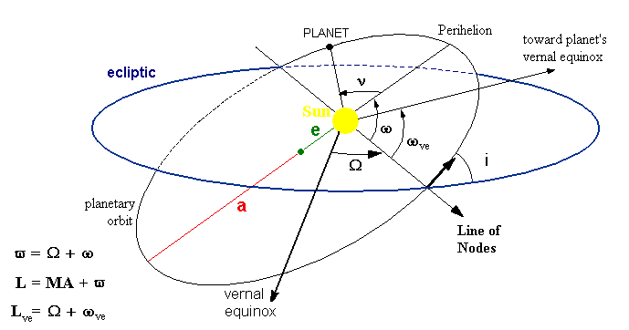

BoPlanets ist ein virtuelles Planetarium, das die Bahnen von Planeten
relativ zu einem Beobachter-Planeten zeigt. Der Beobachter kann die Sonne oder
jeder andere Planet sein.
Die Planeten können in verschiedenen Koordinaten-Systemen gezeigt
werden. Im Ekliptik-System werden die zum Beobachter relativen Planetenbahnen
in der Ebene der Ekliptik, im Äqutorial-System werden Rektazension und Deklination und im
Horizontal-System werden Azimuth und Höhe über dem Horizont gezeigt.
Im Horizont-System wird die Position des Beobachters auf dem beobachtenden Planeten
aus dem aktuellen Standort des Telefons ermittelt (so, als ob der Beobachter mit seinem
Telefon auf dem Planeten sei), oder durch die Adresse eines Standorts (die real nur für die
Erde existiert).
Es kann eine Liste mit den Zeiten von Aufgang, Kumulation und Untergang eines
Planeten von einem anderen Planeten gesehen erzeugt werden.
Im Ekliptik-System werden die Epizyklen der Planeten gezeigt, beobachten
von der Erde oder jedem anderen Planeten.
Die Planeten können sich schrittweise oder kontinuierlih bewegen.
Die Geschwindigkeit kann durch einen Regler verändert werden.
Es gibt die Bezahl-Version BoPlanets-Plus mit dem vollem und die freie
Version BoPlanets mit eingeschränktem Funktionsumfang.
Die folgenden Funktionen gibt es nur in der Plus-Version:
-
Ansichten Horizont an Standort und an Adresse.
-
Ermittlung von Zeiten für Planeten-Aufgang, Kumulation und Untergang.
BoPlanets startet mit der Planeten-Ansicht und der Einschub-Ansicht 'Einstellungen'. Die Planeten-Ansicht enthält am oberen
Bildschirmrand die Aktions-Leiste mit dem Navigations-Button und den Menüs
Ansichten,
Bewegung,
Auf/Untergang und
Hilfe.
Mit dem Navigations-Button kann zwischen der Planeten-Ansicht und der Ansicht Einstellungen hin- und her geschaltet werden.
Die Ansicht Einstellungen kann zudem durch Wischen vom linken Bildschirmrand sichtbar und durch Wischen nach links unsichtbar gemacht werden.
Die Planeten-Ansicht enthält die folgenden Elemente:
- Das Panel mit den Bewegungen der Planeten.
- Ein Feld zur Eingabe der Schrittweite in Erdtagen.
- Ein Regler, mit dem die Geschwindigkeit der Planeten geändert
werden kann.
- Datum und Uhrzeit des Planetenstandes entsprechend der Zeitzone des Telefons.
Die Ansicht
Einstellungen enthält die folgenden Felder:
- Start-Datum: Datum un Zeit, an dem die Planeten starten entsprechend der Zeitzone des Gerätes oder der Adresse eines Standorts.
- Wähle Beobachter: zur Auswahl des beobachtenden Planeten.
- Wähle Planeten: zur Auswahl der zu beobachtenden Planeten.
- Button Fertig: Schließt die Ansicht und wendet die Einstellungen auf die Konfiguration der Planeten an.
Diese Menü enthält die folgenden Einträge:
- Ekliptik:
die Planeten werden in der Ebene der Ekliptik gezeigt.
- Log. Ecliptic:
wie Ecliptik, aber mit logarithmisher Skalierung von Abständen.
- Äquatorial:
zeigt die Planeten relativ zur Äquatorial-Ebene
des beobachtenden Planeten mit Rektazension und Deklination über der Äquatorebene.
- Horizont an Standort/Adresse (nur Plus-Version):
zeigt die Planeten relativ zur
Horizont-Ebene des beobachtenden Planeten. Dabei ist der Standort
des Beobachters auf dem Planeten gegeben durch die aktuelle
Position des Telefons auf dem Planeten (so als sei der Beobachter auf der gleichen
Position wie auf der Erde) oder durch eine Adresse.
Ist der Standort durch die aktuelle Position des Telefons gegeben,
wird die Zeit gemäß der Zeitzone des Telefons angegeben, bei Wahl des Standortes durch eine
Adresse gemäß der Zeitzone der Adresse.
Wenn ausgewählt,werden die Einstellungen Standortzugriff geöffnet, falls kein Standortzugriff aktiviert war.
Das Menü
Bewegung enthält Einträge, die die Bewegung der
Planeten steuern.
- Zeit vorwärts: die Zeit läuft vorwärts.
- Zeit rückwärts: die Zeit läuft rückwärts.
- Schrittweise: Nach Berühren des Bildschirms bewegen sich die Planeten um
einen Schritt.
- Kontinuierlich: die Planeten bewegen sich kontinuierlich,
bis die Option Schrittweise gewählt wird.
(s. Planeten-Ansicht)
(Nur Plus-Version)
Auswahl des Menü-Punktes Aufgang/Untergang öffnet ein Fenster,
mit dem die Parameter zur Ermittlungt der Zeiten von Aufgang, Kumulation
und Untergang eines Planeten aus Sicht eines Beobachter-Planeten
eingegeben werden und die Berechnung gestartet wird.
Bedienelemente des Fensters:
- Beobachter: Name des Beobachter-Planeten.
- Standort: Standort durch aktuelle Position des Telefons
auf Beobachter-Planeten.
Bei der Auswahl Standort werden dei Einstellungen
Standortzugriff geöffnet, wenn kein Standortzugriff
aktiviert war.
- Adresse: Standort ist durch eine Adresse gegeben.
- Breite/Länge: Geographische Breite und Länge des Beobachters auf dem Planeten in Grad.
- Wähle Planet: wähle den Planeten, für den die Auf/Untergangs und
Kumulations-Zeiten ermittelt werden sollen.
- Wähle Auf/Untergangs-Höhe: Wähle die Höhe relativ zum Horizont aus,
die den Zeitpunkt von Auf- und Untergabg bestimmt.
-
Zentrum des Planeten ist bei 0 Grad.
-
-0.56° Atmosph. Lichtbrechung:
Zentrum des Planeten
liegt 0,56 Grad unter Horizont. Wegen Lichtbrechung in der Atmosphäre
des Beobachter-Planeten wird der beobachtete Planet gerade sichtbar.
(Sinnvoll nur für die Erde als Beobachter-Planet.)
- -0.83° Ob. Sonnenrand an Horizont:
Oberer Sonnenrand berührt
den Horizont, das Sonnenzentrum liegt bei 0,83 Grad unter Horizont.
Wegen Lichtbrechung in der Atmosphäre und wegen des scheinbaren
Durchmessers wird die Sonne gerade sichtbar.
(Sinnvoll nur für die Erde als Beobachter-Planet.)
- -6° Ziviles Zwielicht:
Zentrum des Planeten liegt 6 Grad unter
Horizont. Beginn des zivilen Zwielichtes.
- -12° Nautisches Zwielicht:
Zentrum des Planeten liegt 12 Grad unter
Horizont. Beginn des nautischen Zwielichtes.
- -18° Astronomisches Zwielicht:
Zentrum des Planeten liegt 18 Grad unter
Horizont. Beginn des atsronomischen Zwielichtes.
- Startdatum: Datum und Zeit, ab dem die erste Kumulation des
Planeten gesucht wird. Die Zeit entspricht der Zeitzone des Gerätes oder bei einem durch
eine Adresse gegebenen Standort der Zeitzone der Adresse.
- Tage: Anzahl der zu berücksichtigenden aufeinander folgenden Kumulationen.
- Schaltflächen:
- Schließen: Schließt das Fenster.
- Ergebnisse: Zeigt das Fenster mit den Ergbnissen.
- Starten: Startet die Berechnung der Auf/Untergangs-
und Kumulations-Zeiten. Die Ergebnisse werden in einem
eigenen Fenster gezeigt.
- Zeige gespeicherte Daten: Öffnet einen Dialog zur Auswahl einer Datei mit gespeicherten Aufgang/Untergang-Daten
und zeigt die gewählte Datei an.
Auf- und Untergang treten ein, wenn das Zentrum des Planeten die
definierte Auf/Untergangs-Höhe relativ zum Horizont des Beobachters erreicht.
Anwendung der von der atmosphärishen Lichtbrechung abhängigen
Auf/Untergangs-Höhen und die Zwielicht-Höhen ist nur sinnvoll für
die Erde als Beobachter-Planet.
Die Ergebnisse werden in dem Ergebnis-Fenster angezeigt. Dieses hat
die folgenden Schaltflächen:
- Anfang: Springt zum Anfang der Ergebnisse.
- Parameter: Geht zum Fenster mit den Parametern zur
Ermittlung der Auf/Untergangs- und Kumulations-Zeiten.
- Speichern: Speichert die Ergebnisse in einer Html-Datei auf dem externen Speicher.
Ist der Standort des Beobachters durch die aktuelle Position des
Telefons gegeben, werden Datum und Uhrzeit von Aufgang, Kumulation
und Untergang entsprechend der Zeitzone des Telefons angegeben.
Ist der Standort durch eine Adresse gegeben, dann werden Datum und
Uhrzeit gemäß der Zeitzone der Adresse angegeben.
Die Planeten-Ansicht zeigt die Planeten-Bahnen in verschiedenen
Koordinaten-Systemen. Wenn der Modus
Schrittweise ausgewählt ist,
bewegt ein Klick auf den Bildschirm die Planeten um einen Schritt weiter.
Ein langer Klick löscht den Bildschirm. Im Modus
Kontinuierlich bewegen
sich die Planeten kontinuierlich.
Die Koordinaten-Achsen sind mit der Maßeinheit beschriftet:
- Ekliptik und logarithmisch Ecliptik-System:
X- und Y-Achse mit AU: Astronomische Einheit= 149,598 Mio km
- Äquatorial-System:
X-Achse: RA=Rectazension in Grad
Y-Achse: DEC= Declination relativ zur festen Äquator-Ebene des
Beobachter-Planeten in Grad.
- Horizon system:
X-Achse: AZI= Azimuth in Grad; Süden mit Azimuth 0 Grad.
Y-Achse: ALT = Höhe relativ zum Horizont des Beobachters in Grad.
Die Orbital-Eelemente (auch Kepler-Elemente) legen die Bahn der Planet bezogen auf
die Ekliptik fest.
Diese Elemente sind (s. Bild unten):
- Frühlings-Punkt der Erde (vernal eqinox):
Schnittlinie der Äquator-Ebene der Erde mit scheinbarer Bahnebene der Sonne
in aufsteigender Richtung. Die Linie Sonne zum Frühlingspunkt ist die
X-Achse der Ekliptik.
- a: Große Halbachse der Planeten-Ellipse
- e: Numerische Exzentrizität:
Entfernung der Sonne vom Ellipsen-Zentrum = a*e
- Knotenlinie (line of nodes):
Schnittlinie der Planeten-Bahnebene mit Ekliptik. Der
aufsteigende Knoten (asending node) ist der Punkt, an dem der Planet die Ekliptik in
aufsteigender Richtung schneidet.
- Ώ: Länge des aufsteigenden Knotens:
Winkel zwischen Frühlingspunkt und aufsteigendem Knoten des Planeten
gemessen in der Ekliptik-Ebene.
- ω: Argument des Perihels: Winkel zwischen aufsteigendem Knoten
und Perihel gemessen in der Bahnebene.
- ωve: Frühlingspunkt des Planeten (Äquinoktien)
Schnittlinie der Äquator-Ebene des Planeten mit seiner Bahnebene.
- ν: Wahre Anomalie:
Die wahre Anomalie ist der Winkel zwischen Perihel und Position des Planeten
auf seiner Ellipse.
- E: Exzentrische Anomalie:
Die exzentrische Anomalie eines Punktes P auf der Ellipse
ist der Winkel am Ellipsen-Zentrum und einem Punkt Q, der
bestimmt ist durch eine vertikale Linie auf der Haupt-Achse
der Ellipse durch den Punkt P und dem Schnittpunkt Q mit
einem Hilfskreis mit Radius = halbe Hauptachse der Ellipse
um das Ellipsenzentrum. Der Radius-Vektor durch den Punkt Q
bildet den Winkel E mit der Hauptachse der Ellipse.

- Absteigender Knoten (descending node):
Position, an der ein Planet die Ebene der Ekliptik
in absteigender Richtung (Süden) schneidet.
- Äquator-Ebene:
Die Ebene parallel zum Äquator eines Planeten.
- Astronomische Einheit AU:
mittlere Entfernung der Sonne von der Erde= 149,598 Mio km
- Aufsteigende Knoten (ascending node):
die Position, an der der Planet die Ebene der Ekliptik in
aufszeigender Richtung (Nord) schneidet.
- Aufgang eines Planeten:
Von unterhalb des Horizonts kommend erreicht das Zentrum des
Planeten die Auf/Untergang definierende Höhe relativ zum Horizont
eines Beobachters auf dem Beobachter-Planeten.
- Auf/Untergang definierende Höhe:
(s. Menü Aufgang, Kumulation, Untergang)
- Azimuth:
der Winkel der Projektion des Radius-Vektors eines Planeten
auf die Horizont-Ebene und der Süd-Linie.
(Osten: negativ, Westen: positiv; Süden: 0 Grad).
- Datum&Zeit:
Datum und Zeit der auf dem Telefon eingestellten Zeitzone.
- Deklination:
der Winkel eines Planeten relativ zur Äquator-Ebene
des Beobachter-Planeten.
- Ekliptik:
Die Referenz-Ebene des Solar-Systemes. Die X-Achse ist
durch die Linie Sonne - Frühlingspunkt (vernal eqinox)
der Erde gegeben.
- Greenwich-Meridian:
der Meridian mit geographischer Länge 0 Grad.
Der Greenwich Meridian für andere Planeten als die Erde ist
definiert als der, an dem die Sonne am 01.01.2000, 0:0hr ihren
tiefsten Stand erreicht hat.
Für die Sonne als Beobachter-Planet ist der Greenwich-Meridian der,
der am 01.01.2000 0:0 hr parallel zur Linie zum Frühlingspunkt lag.
- Greenwich mittlere siderishe Zeit (Greenwich Mean Sidereal Time GMST):
der Winkel des Greenwich-Meridians gegen die Linie Sonne-
Frühlingspunkt des Planeten in Grad.
- Höhenwinkel:
der Winkel eines Planeten relativ zur Horizontal-Ebene eines Beobachters.
- Horizont-Ebene:
Tangential-Ebene an einem Beobachtungs-Punkt auf einem Planeten.
- Geographische Breite:
Der Winkel eines Standortes auf einem Planeten gemessen gegen seinen
Äquator (Norden: positiv, Süden: negativ).
- Geographische Länge:
Winkel, den der lokale Meridian mit dem Meridian von Greenwich
bildet (Osten: positiv, Westen: negativ)
- Lokale mittlere siderische Zeit (Mean Sidereal Time LMST):
der Winkel, den der lokale Meridian mit dem Frühlingspunkt
des Planeten bildet.
LMST=GMST + geographische Länge des Meridians.
- Neigung der Rotationsachse (obliquity):
Neigung der Rotations-Ahse gegen die Bahnebene des Planeten.
- Orbit:
Bewegung des Planeten in der Bahnebene.
- Orbital/Kepler Elemente eines Planeten:
(s. Orbital-Elemente)
- Perihel (perihelion):
Position des Planeten auf seiner Bahn mit der minimalen
Entfernung zur Sonne.
- Rectazension (right ascension):
Winkel der Position eines Planeten in der Äquator-Ebene des
Beobachter-Planeten gegen seinen Frühlingspunkt (vernal equinox).
- Siderischer Tag:
Zeit, um 360 Grad um die Rotations-Achse des Planeten zu drehen.
(Erde: 0.9972 *24 h)
- Standort auf dem Beobachter-Planeten:
Standort auf dem Beobachter-Planeten, der durch die geographishe
Länge und Breite des Telefons auf der Erde oder einer Adresse auf der Erde
bestimmt ist.
- Sonnen-Tag:
Zeit für eine Umdrehung des Planeten um seine Rotations-Achse, bis
der gleiche Stand der Sonne erreicht wird (Erde: 24 h).
- Umlauf-Periode (orbital period):
Zeit für einen Umlauf um die Sonne.
- Untergang eines Planeten:
Von oberhalb des Horizonts kommend erreicht der Planet die
Auf/Untergang definierende Höhe relativ zum Horizont eines
Beobachters auf dem Beobachter-Planeten.
Version 2.4.0
Veröffentlicht: xx.xx.2024
- Neu: Anpassung an geforderte Google Richtlinien.
Version 2.3.5
Veröffentlicht: 24.08.2023
- Neu: Anpassungen an Android 14.
- Fehlerbehebung: Korrektur von Google Richtlinien-Verstößen.
Version 2.3.4
Veröffentlicht: 27.12.2021
- Neu: Anpassungen an Android V12.0
- Neu Plus-Version: Die Ergebnisse von Auf/Untergang werden im gemeinsamen Speicher abgelegt, anstelle im app-spezifischen Speicher.
Andere Apps wie Datei-Manager oder Browser können darauf zugreifen.
- Kleinere Korrekturen bei der Planeten-Darstellung.
Plus-Version 2.3.1, Freie Version 2.3.2
Veröffentlicht: 10.01.2021
- Neu: Anpassungen an Android V11.0
- Neu: Das Start-Datum kann mit und ohne Zeit eingegeben werden.
- Neu Plus-Version: Anzeige von bereits in einer Datei gespeicherten Aufgang/Untergang-Daten.
Weil in Android 11.0 Datei-Manager nicht mehr auf app-spezifische Daten zugreifen können,
ist das die einzige Möglichkeit, gespeicherte Daten anzuzeigen.
- Fehlerbehebung: die Eingabe von Start-Datum und Zeit war nicht möglich.
- Fehlerbehebung Plus-Version: die Auswahl einer Standort-Adresse ergab immer einen Fehler.
Plus Version 2.2.6, Free Version 2.2.8
Veröffentlicht: 18.05.2020
- Neu für Android Version >=5.0 Lollipop: Wenn eine aktualisierte Version vorhanden ist, wird der Benutzer aufgefordert, diese zu installieren.
- Neu: Kleinere Änderungen der Benutzeroberfläche..
- Neu: Anpassungen an Android 10.0
- Fehlerbehebung Plus-Version: Auf einigen Geräten wird die Ansicht Auf/Untergang im Querformat nicht vollständig angezeigt.
Version 2.1.4
Veröffentlicht: 21.01.2020
- Fehlerbehebung: Wenn die Planeten sich kontinuierlich bewegen und der Bildschirm ausgeschaltet
und dann wieder eingeschaltet wird, wird die Bewegung der Planeten nicht fortgesetzt.
Version 2.1.2
Veröffentlicht: 16.01.2020
- Änderung: Start-Datum mit Datum und Zeit.
- Änderung: Modifikationen der Planeten-Einstellungen werden wirksam nach Schließen der Einstellungen,
auch wenn der Fertig-Button nicht gedrückt wurde.
- Änderung: Plus-Version: wenn der Standort-Dienst des Gerätes nicht aktiviert ist, werden die Einstellungen des Dienstes geöffnet.
- Fehlerbehebung Plus-Version und Android >=9.0: Wenn die Horizontal-Ansicht oder Auf/Untergang für den Standort einer Adresse aufgerufen wurde,
wird die Zeit nicht als lokale Zeit der Adresse angegeben, sondern als auf dem Gerät eingestellte Zeit.
Version 2.0.2
Veröffentlicht: 26.08.2019
- Fehlerbehebung (Freie Version): Erzwungener Abbruch bei Geräten mit Android 4.3, wenn sich die Planeten kontinuierlich bewegen und ein Start-Datum eigegeben wurde (ev. mehrfach).
Version 2.0.1
Veröffentlicht: 08.11.2018
- Freie Version BoPlanets 2.0.1:
- Fehlerbehebung: Erzwungener Abbruch bei Geräten mit Android 4.3, wenn sich die Planeten kontinuierlich bewegen, das Feld Start-Datum fokussiert ist und das Gerät mehrfach gedreht wurde.
- Fehlerbehebung: Wenn BoPlanets durch die Home-Taste in den Hintergrund verschoben und dann wieder aktiviert wurde, erscheint als Start-Datum 1.1.1970.
- Version BoPlanets Plus 2.0.1: s. Version V2.0.0
Version 2.0.0
- Anpassungen an Android V9.0.
- Neu: Die Einstellungen zu Beobachter-Planet und anzuzeigende Planeten wurde in eine Einschub-Ansicht Einstellungen verlagert.
Diese kann durch Wischen vom linken Bildschirmrand oder durch Klick auf den Navigations-Button links in der Aktionsleiste am oberen Bildschirmrang sichtbar gemacht werden.
Wischen nach links oder Klick auf den Navigations-Button zeigt wieder die Planeten-Ansicht.
- Neu: Feld Startdatum ; Datum, an dem die Planeten starten,
- Neu: Der Zurück-Button schließt die geöffneten Einstellungen. Wenn diese nicht geöffnet waren, wird die App beendet.
Version 1.0.2
-
Menüs werden für Android-Version < 3.0 durch Icons in der
Aktions-Leiste angesprochen, wie bisher für Version >= 3.0. Einträge,
die nicht in die Aktions-Leiste passen, werden durch Klicken
des Menü-Knopfes sichtbar.
- Fehlerbehebung: Wurde in einem Eingabefeld ein unzulässiger Wert
eingegeben, dann konnte die Aktivität erst nach Eingabe eines
korrekten Wertes geschlossen werden.
- Fehlerbehebung: Ab Androd Version 4.3 trat häufig ein erzwungener Abbruch auf,
nachdem das Telefon gedreht wurde.
Version 1.0.1
(Nur Plus-Version)
- Fehlerbehebung: wenn ein Dialog geöffnet war (z.B. Horizont
an Adresse) und der Home Button gedrückt wurde, erschien häufig die
Meldung leaking window, was manchmal zu einem erzwungenen
Abbruch führte.
- Wenn Horizont an Standort gewählt wird und kein
Standortzugriff aktiviert war, werden die Einstellungen
Standortzugriff geöffnet.
- Wenn Horizont an Adresse gewählt wird und keine
Netzwerk-Verbindung aktiviert war, dann werden die Einstellungen
des Telefons geöffnet.
BoPlanets: Copyright (c) Bernd Ostermann 2013;
eMail: ostermann.bernd@googlemail.com